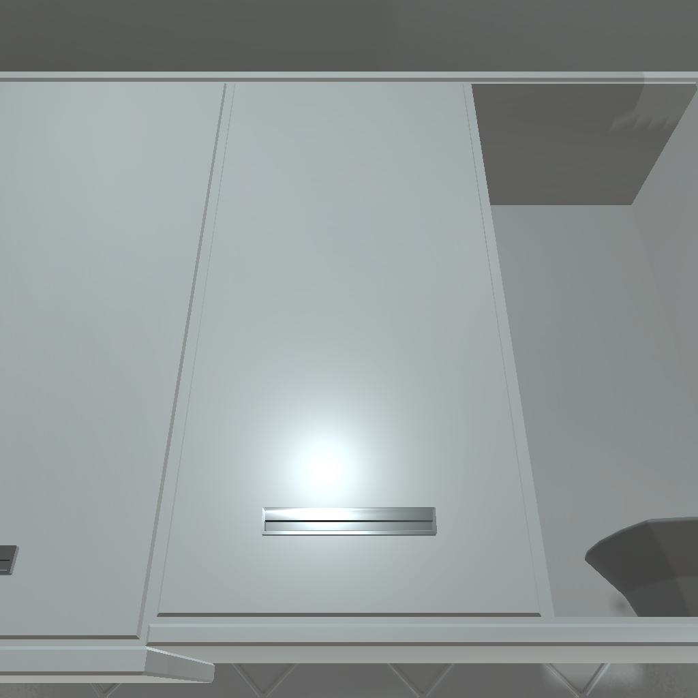

---------------------------------------------------------task: 21---------------------------------------------------------
--------------------------------------------------------------------------------------------------------------------------------------------------------------------
--------------------------------------------------------------------------------------------------------------------------------------------------------------------
Step:--------------------------------------------------------------------------9-------------------------------------------------------------------------------
----------------------------------------
VLM Prompt:
Image1:
Image2:
Image3:
**Instruction**
1. Analyze the provided images to identify all visible household objects and compare the difference between images (e.h. whether the object is opened or not and taken on hand or not), focusing on those relevant to the task description "heat some cup and put it in countertop."
2. Use the analysis of images and the task hint "The agent must find an object of the desired type, pick it up, go to a microwave, heat the object with the microwave, then find the correct location to place it, and put it down there. The agent does not need to use the microwave button or open the microwave to heat the object, and the agent just needs to do action that is "heat the object with the microwave"." to answer the question: what is the most reasonable action in the choices for the task description "heat some cup and put it in countertop"?
3. Decide and write the answer using the template: The answer is: (i): , where i is the real number. If there is no desired object in images, search every place based on **Initial Observation** to find the object. And if no one is exactly correct, choose a similar answer.
**Initial Observation**
You are in the middle of a room. Looking quickly around you, you can see cabinet (1-6), microwave (1), countertop (1-2), coffeemachine (1), toaster (1), sink (1), sinkbasin (1), fridge (1)
**Answer Choices**
(1): go to cabinet 1
(2): go to cabinet 2
(3): go to microwave 1
(4): go to cabinet 4
(5): go to cabinet 5
(6): go to cabinet 6
(7): go to countertop 1
(8): go to coffeemachine 1
(9): go to toaster 1
(10): go to countertop 2
(11): go to sink 1
(12): go to sinkbasin 1
(13): go to fridge 1
(14): close cabinet 3
(15): take bowl 1 from cabinet 3
**Answer**
Let's think step by step by following the instructions.
----------------------------------------
----------------------------------------
Original Response:
First, we need to analyze the images. All three images show a cabinet with its door closed, and there is no clear indication of any objects being taken out or any activity happening. Therefore, we can assume that the cabinet has not been opened, and no objects have been taken out.
Next, referring to the task description "heat some cup and put it in countertop." and the task hint provided, we need to find a cup, heat it in the microwave, and then place it on the countertop. Since no cup is visible in the images, we need to search for it based on the initial observation.
Based on the initial observation, the most likely places to find a cup would be in the cabinets or on the countertop. Since the images show the cabinet and there is no cup in sight, we should check the cabinets that have not been opened yet.
Considering the answer choices, the most reasonable action would be to go to a cabinet that we haven't seen inside yet to find the cup. Cabinet 3 is shown in the images and appears to be unopened.
Therefore, the answer is: (4): go to cabinet 4. Since we have not seen inside cabinet 4 and it is not specified in the images, it would be the next logical place to search for a cup to complete the task.
----------------------------------------
----------------------------------------
>>> Refine Original VLM Response and Get Pure Action: No action
----------------------------------------
-----------------------------------------------------------------
Running time: 10.313599348068237 seconds
Total Money: 13.118439999999996
-----------------------------------------------------------------
-----------------------------------------------------------------
Text Observation:Nothing happens.
-----------------------------------------------------------------
UNSUCCEED